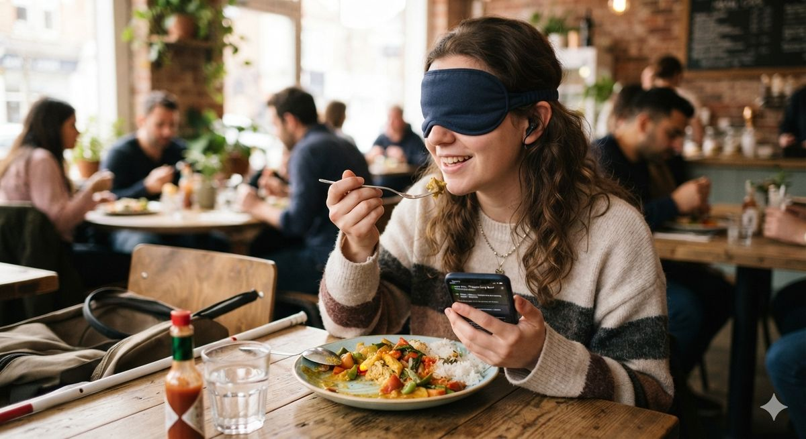

The "What's on my plate?" problem
For a blind or low-vision (LV) person, a plate of food is a puzzle that sighted people solve at a glance.
Who needs this
Low vision covers a wide range, from people who are completely blind to people who still see shapes and colors but cannot make out details. In both cases, a plate set in front of them raises three questions: what food was served, where each item is, and how much there is. Today most LV people answer these questions by asking a friend or a waiter, or by carefully touching the food with a fork or fingers. That works, but it takes away some independence, especially in restaurants or when eating alone.
Phone apps already help with some food tasks. Google's Lookout app, for example, can identify packaged food by its label or barcode and read it aloud [1]. A plate of cooked food is much harder, because there is no label or barcode, the food can be any shape, and items touch and overlap. Researchers have started building systems for exactly this case. One recent student project ran a YOLOv8 detector on a mid-range Android phone and spoke the names of the detected foods to visually impaired users [2].

Why "how much" matters for LV users
Knowing the amount of food is also useful. It tells a person whether a serving is very large, how much is left, and whether they have finished one item before moving to the next. Most of the research on estimating portions comes from dietary assessment, where the goal is to replace handwritten food diaries with a photo of the meal. Purdue's TADA project was one of the first to propose this idea [3]. This tutorial borrows those portion methods and looks at them from the point of view of an LV user.
What the system must output
Putting this together, a food-on-plate system for LV users needs to produce three outputs. Each one maps to a classic computer vision task:
| Output | Computer vision task | Why an LV user needs it |
|---|---|---|
| What is it? | Classification | Knowing what was served |
| Where is it? | Detection | Reaching each item (clock positions) |
| How much? | Segmentation + portion estimation | Knowing how much is there or left |
The final step is turning these outputs into something the person can use. For blind users that usually means short spoken sentences using clock positions, such as "rice at 9 o'clock," which is a common way to describe a plate to someone who cannot see it. For people with partial sight, the phone screen can also help with large, high-contrast labels drawn over the food. The rest of this tutorial looks at how each of these steps is done and how well current research handles them.